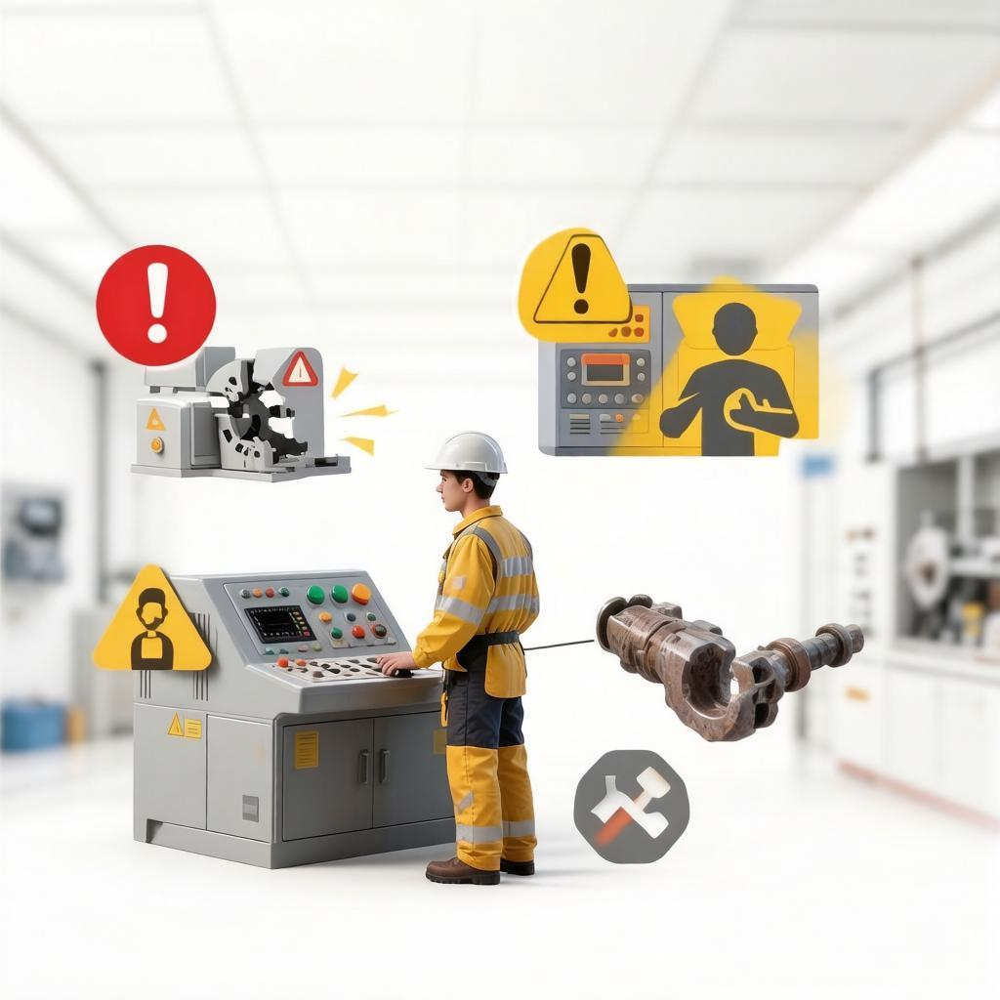
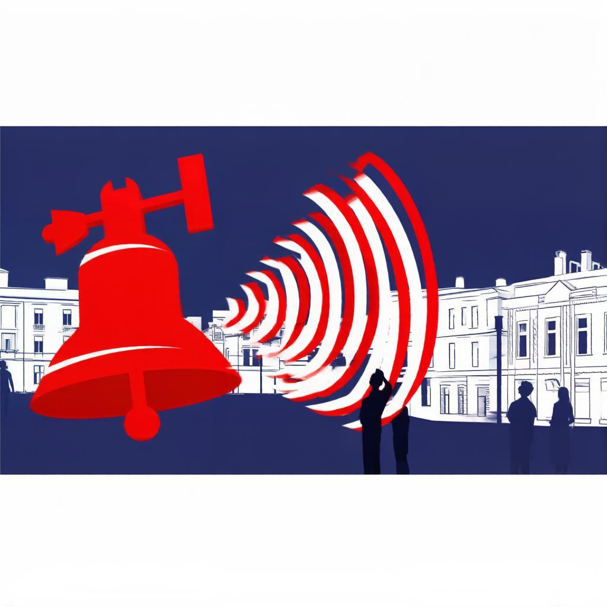

Гражданская оборона (ГО) — система мероприятий по подготовке к защите и по защите населения, материальных и культурных ценностей от опасностей военного времени.
Чрезвычайная ситуация (ЧС) — обстановка на территории, сложившаяся в результате аварии, катастрофы или бедствия, которые могут повлечь человеческие жертвы и ущерб здоровью.

Основные причины техногенных аварий:
Опасные подразделения ОИЯИ: ЛНФ, ОГЭ, ЛФВЭ, ЛЯР, ЛЯП.
Для г. Дубны и ОИЯИ характерны следующие угрозы:

Непрерывное гудение сирен в течение 2-х минут.
Действия: Включить радио/ТВ местного канала, прослушать экстренное сообщение о характере угрозы и направлении выхода.
Радиационная опасность (реактор ИБР-2М):
При угрозе выброса необходимо:
Установленные способы доведения информации: сирены, громкоговорители, речевая информация администрации ОИЯИ.
Главное правило: сохранять спокойствие, действовать быстро и без паники.
При химической аварии:
При радиационной аварии (если нельзя выйти):
В наличии в ОИЯИ: Противогазы ГП-5/ГП-7, костюмы Л-1, респираторы Р-2.
На территории ОИЯИ имеются защитные сооружения (ЗС ГО). Работники укрываются группами по подразделениям со старшим группы.
Температура внутри: не выше 32°C. Уборка проводится укрываемыми 2 раза в сутки.
Сборные эвакуационные пункты (СЭП) для сотрудников ОИЯИ:
Что взять с собой: Документы, деньги, смену белья, продукты на 2-3 дня.
Пункт назначения: пос. Запрудня, Талдомского района Московской области.
Права: на защиту жизни и здоровья, на информацию о рисках, на использование имущества ГО, на возмещение ущерба и компенсации.
Обязанности: соблюдать законы в области ГО и ЧС, изучать способы защиты, выполнять правила поведения при угрозе ЧС, оказывать содействие органам власти.